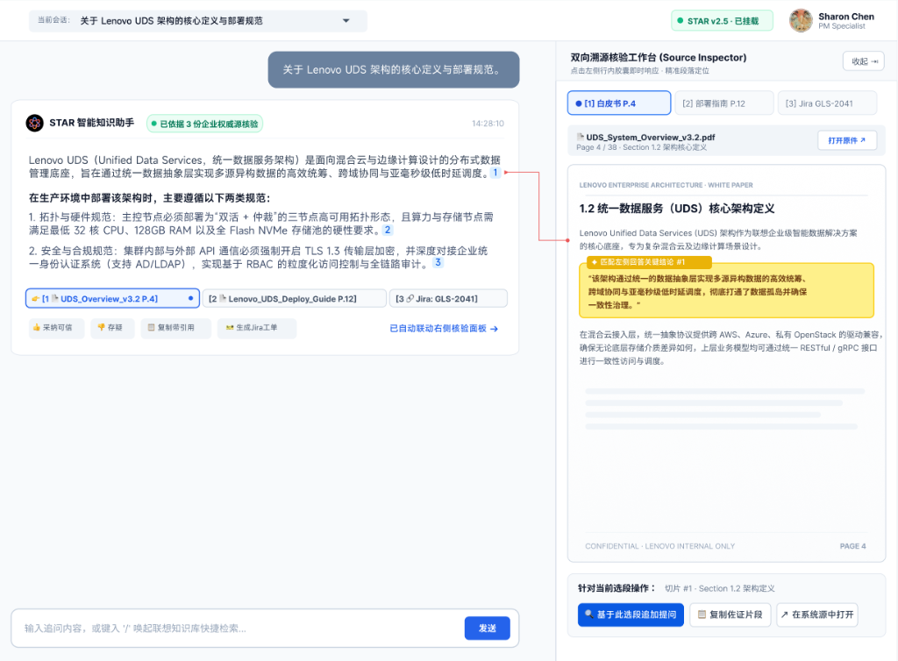
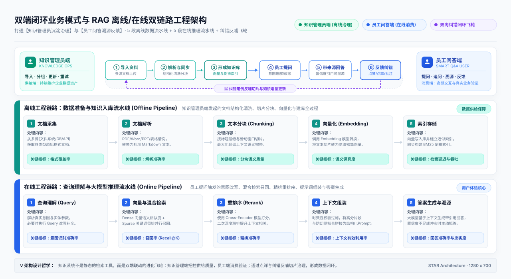
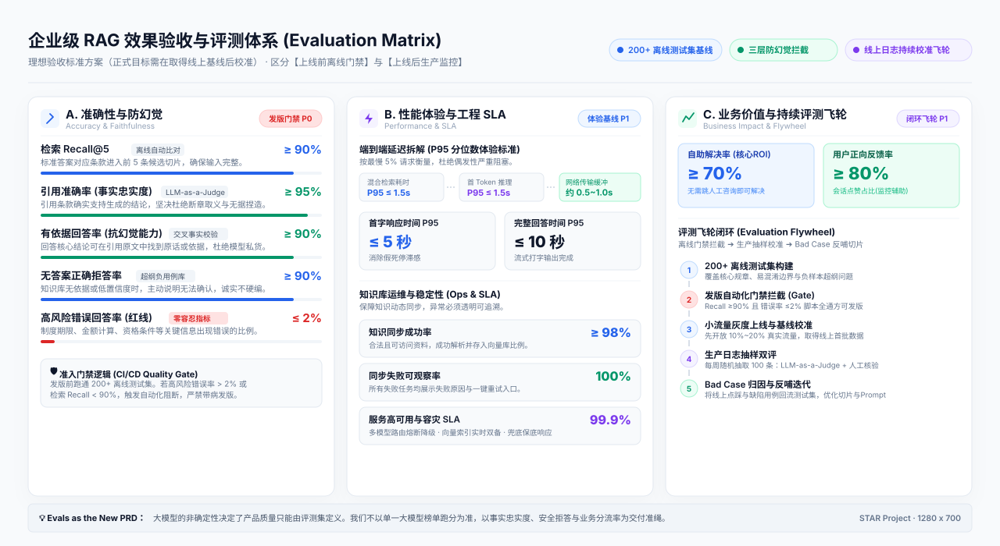

STAR｜企业智能知识治理与问答平台
从“纯聊天框”到“可信问答 + 知识治理”双端闭环
面对 6 万+ 员工查制度“靠猜关键词、翻多篇文档仍不敢信”的深层痛点，主导设计三层防幻觉机制与知识时效治理引擎，并首创在团队推行“评测即 PRD (Eval Pack)”的 RAG 分段验收体系。
一页速览（Executive Summary）

业务背景与痛点破局（Context & Problem）
核心矛盾不是“查不到”，而是“查到了员工也不敢信”
改造前：传统全文检索与人工答疑链路
企业 200+ 份人事、考勤、差旅制度高度分散。新旧版本长期并存。员工查一条报销标准需要猜关键词，读不懂冗长条款，无法确认是否最新版，最终依然选择发消息向 HR/行政反复求证。
改造后：STAR 可信知识问答与智能治理
自然语言直接提问。系统通过标题语义切片精确定位条款，前置通过时效元数据强规则过滤过期制度，输出带依据引用的答案并高亮原文。无依据时诚实拒答，让员工完全可信、敢信。
双端闭环架构与三大核心机制（Solution Architecture）
不只是做前端聊天框，更打通底层知识资产的生命周期维护

机制 1 · 业务语义切片（根治语义断裂）
设计方案：根据文档的 H2/H3 标题层级 + 业务语义块 进行递归分块切片。确保每一个 Chunk 内部完整包含前置条件、操作流程与补充例外，从输入侧阻断语义断裂。
机制 2 · Context Engineering 与时效过滤（防 Context Rot）
设计方案：在知识库元数据中注入 “生效日期 / 废止状态 / 适用部门” 标签。在向量检索层前置执行强规则时间过滤器，失效条款直接物理阻断，彻底阻断上下文腐化（Context Rot）。
机制 3 · 可信交互与代码级明确拒答
设计方案：
① 强制溯源：Prompt 强约束无来源不可回答。
② 原文跳转锚定：可点击角标直达原件对应段落。
③ 证据不足追问/代码级明确拒答：置信度低于阈值时诚实拒答并指引对口业务部门。
关键产品决策与权衡（Trade-offs Matrix）
| 决策维度 | 可选方案对比 | 最终选择 | 产品理由与深度思考 |
|---|---|---|---|
| 产品整体形态 | 纯 ChatBot 对话框 vs 双端协同闭环系统 |
双端协同闭环 | 单纯前端聊天框无法解决“企业制度无人维护、内容过期”的根因。必须把治理工具交给管理员，才能让知识库活起来。 |
| 文档切片策略 | 定长切片 (如 500 token) vs 标题层级语义切片 |
语义切片 | 定长切片会在逗号句号处随机切断，破坏“申报条件-特殊说明”整体性。语义切片能保留完整业务上下文。 |
| 时效版本管理 | 依赖人工手动下架废止 vs 元数据时间戳强规则过滤 |
元数据强规则过滤 | 人工下架无法规模化，总会遗漏。系统层打上生效期与失效标签并在检索前强过滤，是从工程制度上防范错误。 |
| 无依据/低置信场景 | 允许模型尝试推断回答 vs 主动拒答并告知对口部门 |
主动拒答并转交 | B 端管理制度具有强严肃性，“错答导致报销失败或违规”的代价远高于“告诉员工去问对口 HR”。宁缺毋滥。 |
| 回答呈现方式 | 只输出结论文本 vs 结论 + 引用卡片 + 原文跳转 |
结论 + 强制溯源 | 降低员工的核验信任成本。只有“看得见依据”员工才敢按答案去办事，彻底打消对大模型的信任顾虑。 |
核心差异点：企业级 RAG 全生命周期评测体系（PoC → 规模化 → 生产投产）
遵循 RAG 三元组与 A-M-I 诊疗闭环，从 Demo 原型摸高到自动化回归门禁与生产数据飞轮
PoC 原型验证期：业务摸高与种子收集
• 在 Dify 搭建原型环境，上传核心制度 PDF，开启全量日志追踪。
• 导出首批 200+ 真实提问日志，组织 HR 业务专家标注 Ground Truth。
• 设置防幻觉规则：无依据问题诚实拒答并引导转人工，阻断薪资打听。
Dify 日志看板 + Excel 标注题库 + PM 人工 Vibe Check 盲测。
规模化内测期：自动化回归与 A-M-I 治理
• 推动研发接入 DeepEval + Ragas，将 200 条黄金测试集做成自动化回归脚本。
• 设立发版门禁：Faithfulness < 0.85 或相关性 < 0.8 禁止上线。
• A-M-I 实操排障：治理切块切碎表格 (BC-005)、解决轻量模型多轮改写丢实体 (BC-011)。
DeepEval 自动阅卷机 + Git CI/CD 自动化门禁流水线。
生产投产期：全链路监控与数据飞轮
• 接入 Langfuse / LangSmith 生产级监控，跟踪 TTFT 首字延迟与 Token 开销。
• 打造数据飞轮：员工点踩或转人工工单的 Session 自动回流待审池。
• 制度防腐机制：每月元数据时间戳扫描，自动预警过期条款并触发重新评测。
Langfuse 全链路 APM + 待审池自动回流管道 + 专家校准工具。
01. 算法与模型层评估：RAG 三元组指标体系（Ragas / DeepEval 标准）解耦评估 · 严防幻觉

黄金测试集分布（5 大典型业务用例类型）
| 失败模式 (Failure Mode) | 触发场景 | 检测方式 (Eval Method) | 产品缓解设计 (Mitigation) |
|---|---|---|---|
| 版本混淆 | 新旧制度同时存在于库中 | 时效型回归测试用例检测 | 注入生效时间戳元数据，检索层前置强规则过滤 |
| 语义断裂 | 定长切片刚好截断前置条件 | 召回段落语义完整性抽查 | 基于 H2/H3 标题的业务语义切片 |
| 幻觉编造 | 库中无依据，模型擅自发挥 | 拒答型用例二元判定 | 三层防幻觉：强制溯源 + 原文跳转 + 拒答 |
| 跨部门泄露 | 普通员工提问受限敏感制度 | 越权型用例红队探测 | 前置身份鉴权 + 部门范围过滤隔离 |
| 过度拒答 | 库中有依据但置信度误判拒答 | 拒答准确率指标监控 | 调优检索相似度阈值与 Prompt 判定指令 |
黄金对话交互演示（Golden Conversations）
通过直观的问答还原，展示“带证据回答”与“无证据拒答”的确定性体验
1. 住宿标准：深圳员工前往一类城市（北京、上海）出差，普通员工住宿限额为 550 元/间/夜；
2. 市内交通：往返机场/高铁站可凭打车发票实报实销；日常市内通勤建议公共交通，晚间 22:00 后加班打车需直属主管审批。
为避免提供错误指引，系统暂不提供该推断答复。如有疑问，建议您联系：
• 集团人力资源共享中心 (HRSSC)：内线 8810
• 或提交 OA 人事咨询工单 获取人工核实。
上线交付与演进计划（Rollout Strategy）
从安全小范围灰度，到全集团多业务横向复制的标准路径